Все про шприцы
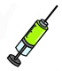
Шприц (нем. Spritze, от spritzen — брызгать)- это медицинский инструмент, представляет собой полый градуированный цилиндр с конусом, на который насаживается игла, с обратной стороны цилиндра вводится шток с поршнем.
Предназначен для инъекций, диагностических пункций, отсасывания патологического содержимого из полостей, забора биологических жидкостей, и введения лекарственных средств.
В XX веке были наиболее распространены шприцы с цилиндром из стекла и остальными частями из хромированного металла. Однако впоследствии получили распространение так называемые одноразовые шприцы, практически целиком изготовленные из пластмассы, за исключением иглы, которая по-прежнему изготавливается из металла.
Спустя какое-то время после создания шприца, врачи всего мира признали гениальность изобретения одноразовых шприцев и стали назначать своим больным целительные уколы. Лекарственные вещества, введенные в организм, минуя пищеварительный тракт, действовали на удивление быстро и эффективно. Они сразу впитывались в кровь, поэтому можно было не опасаться, что они потеряют свои свойства в желудке или кишечнике. К тому же вколотые лекарства медленнее разлагаются в печени, поэтому работают дольше.
Без шприца не обходятся даже здоровые люди, каждому из нас в свое время проводили профилактические прививки, инъекции и т.д. Поэтому качество и безопасность используемых шприцев является важной проблемой практически для каждого человека, начиная с новорожденных и заканчивая людьми преклонного возраста.
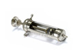
Классификация шприцев
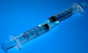
Предлагаем классификацию шприцев по следующим признакам:
ПО ОБЪЕМУ ЦИЛИНДРА
в зависимости от объема цилиндра шприцы бывают малого объема, стандартного объема, и большого объема.
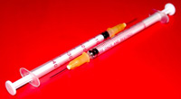
В зависимости от объема цилиндра шприцы бывают:
- МАЛОГО ОБЪЕМА (0,3, 0,5 и 1 мл)
Используются для точного введения лекарственного средства в
- эндокринологии (инсулиновые шприцы),
- фтизиатрии (туберкулиновые шприцы),
- неонатологии, а также:
- для вакцинации и проведения аллергологических внутрикожных проб.
- СТАНДАРТНОГО ОБЪЕМА (от 2 мл до 22 мл)
Применяются во всех отраслях медицины для выполнения:
- подкожных (как правило, шприцами объемом до 3 мл),
- внутримышечных (как правило, шприцами объемом от 2 мл до 6 мл),
- внутривенных (как правило, шприцами объемом от 10 мл до 22 мл)
и других видов инъекций.

- БОЛЬШОГО ОБЪЕМА (30, 50, 60 и 100 мл)
Используют для отсасывания жидкости, введения питательных сред, промывания полостей.
ПО ПОЛОЖЕНИЮ НАКОНЕЧНИКА-КОНУСА
в зависимости от положения наконечника-конуса на цилиндре, к которому крепится игла, различают шприцы с коаксиальным и эксцентрическим расположением наконечника-конуса:
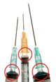
Положение наконечника-конуса на цилиндре шприца бывает
КОАКСИАЛЬНОЕ (КОНЦЕНТРИЧЕСКОЕ):
Коаксиальным (концентрическим) положение наконечника-конуса называется в том случае, когда наконечник-конус находится по центру цилиндра шприца. Положение наконечника-конуса обуславливается удобством применения шприца.
Kонцентрично наконечник-конус обычно расположен у шприцев, применяющихся для подкожных и внутримышечных инъекций, объемом от 1 мл до 11 мл.
ЭКСЦЕНТРИЧЕСКОЕ
Эксцентрическим положение наконечника-конуса называется в том случае, когда наконечник-конус расположен сбоку цилиндра шприца
Смещенное положение наконечника-конуса обусловлено спецификой применения шприцев объемом 22 мл: основная область применения шприцев такого объема - забор крови из вены в области локтевого сгиба.
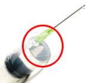
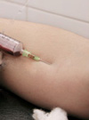
ПО ТИПУ КРЕПЛЕНИЯ ИГЛЫ
По типу присоединения иглы к конусу цилиндра различают: разъем типа Луер, разъем типа Луер-Лок, несъемную иглы.
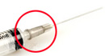
Классификация шприцев по типу крепления иглы к цилиндру
Существует три типа крепления иглы к цилиндру шприца:
- Луер / Luer
- Луер-Лок / Luer - Lock
- несъемная, интегрированная в корпус цилиндра игла
РАЗЪЕМ ТИПА "ЛУЕР"
Разъем типа Луер / Luer - это такой тип крепления иглы к цилиндру шприца, при котором игла "надевается" на выступающую часть цилиндра
Это наиболее распостраненный тип крепления иглы, он является стандартом для шприцев объемом от 2 до 100 мл, нередко встречается и у шприцев объемом 1 мл.
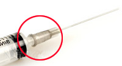
РАЗЪЕМ ТИПА "ЛУЕР-ЛОК"
Разъем типа "Луер-Лок" / Luer-Loсk - это такой тип крепления иглы к цилиндру шприца, при котором игла вкручивается в шприц.
Соединение Луер-Лок применяется в шприцах машинного привода (инфузионные насосы типа «перфузор» и «инфузомат»), а также в устройствах для капельных инфузий. Шприцы с креплением иглы такого типа могут быть использованы и при простых инъекциях, когда требуется особенно прочное соединение шприца с иглой. Однако в общем такое крепление для обычных инъекций не очень удобно - в частности, достаточно затруднительно сменить иглу, "разобрать" шприц после манипуляции.
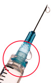
ИНТЕГРИРОВАННАЯ (НЕСЪЕМНАЯ) ИГЛА
Несъемная, интегрированная в корпус цилиндра иглой
Интегрированной иглой, как правило, комплектуются шприцы малого объема - до 1 мл.
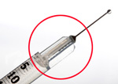
ПО КОНСТРУКЦИИ
Главный критерий классификации, который влияет на потребительские свойства шприца – конструкция шприца. Конструктивно шприцы разделяются на двухкомпонентные шприцы и трехкомпонентные шприцы.
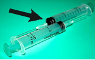
Классификация шприцев по конструкции
Конструкция двухкомпонентных шприцев обуславливает их «врожденные пороки», которые для пациентов становятся источником различных пренеприятнейших ощущений.
Для того, чтобы добиться достаточной герметичности таких шприцев, их поршень делают чуть большего диаметра, чем внутренний диаметр цилиндра, по которому он скользит. Герметичность достигается, но высокой ценой: из-за трения при движении поршня с цилиндра могут "сдираться" микрочастички полипропилена, которые затем могут попасть в ткани или кровь. При этом значительно возрастает усилие, которое необходимо приложить для перемещения поршня по цилиндру.
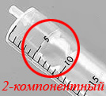
Появление резинового уплотнителя на поршне у трехкомпонентных шприцах, позволило снизить силу трения частей шприца друг о друга при введении лекарственных препаратов.
Ход поршня стал плавным, а укол — менее болезненным. Кроме того, исключена возможность сдирания микрочастиц полипропилена со стенок цилиндра и попадания их в организм. Поэтому сегодня использование трехкомпонентных шприцев стало стандартом в медицинской практике развитых стран.

Сделать укол еще менее болезненным можно за счет применения атравматических игл, которые используются в шприцах BogMark.
Такая игла тщательно отшлифована, имеет трехгранное острие и покрыта слоем из силикона.
Ее строение позволяет существенно снизить болевые ощущения пациента во время инъекции: ведь она не «разрезает» волокна тканей, как другие иглы, а лишь раздвигает их.
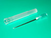
Современные шприцы - трехкомпонентные шприцы
На сегодняшний день производство шприцев в промышленных масштабах тоже не стоит на месте.
Несколько десятилетий назад практики «от медицины» заметили, что степень болезненности укола зависит не только от остроты иглы, но и от плавности хода поршня шприца. Это объясняется тем, что пытаясь привести тугой поршень шприца в движение, медсестра прикладывает заметное усилие. Из-за этого подвижен шприц в ее руках – а следовательно подвижна и игла в тканях пациента. Именно такое "ковыряние" иглы в тканях и является источником болевых ощущений.
Решить такую проблему удалось конструктивно. Добавленный на поршень шприца резиновый уплотнитель позволил передвигаться ему в цилиндре с меньшим коэффициентом трения, то есть более плавно - а, следовательно, делая укол менее болезненным для пациента.

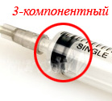
Так на смену двухкомпонентным шприцам (цилиндр + поршень) пришли трехкомпонентные шприцы (цилиндр + поршень + резиновый уплотнитель на поршне).
Это, казалось бы, незначительное конструктивное отличие на самом деле имеет очень большое значение для характеристик шприцев:
-Применение трехкомпонентного шприца дает гарантию того, что микрочастички материала, из которого изготовлены шприцы не попадут в организм пациента при инъекции (такой риск присутствует при использовании двухкомпонентных шприцев - когда по пластиковому цилиндру шприца продирается пластиковый поршень).
-Медсестра, которая пользуется таким шприцем, проведет манипуляцию мягко и плавно (благодаря легкости движения поршня исключено "ковыряние" иглы), введет именно то количество препарата, которое назначил врач.
-Медицинскому работнику (или не обязательно медицинскому работнику - не секрет, что часто инъекции производят родственники, знакомые пациентов, а то и они сами) инъекцию будет произвести легко и удобно.
-Пациент практически не будет испытывать боли от самой манипуляции.
В развитых странах давно ведется борьба с болью при проведении простейших медицинских процедур, в том числе и инъекций.
Создание трехкомпонентных шприцев как раз-то и стало актуальным решением, добавление третьего компонента позволило сделать уколы намного менее болезненными.
А привычные для нашего менталитета шприцы (не только «стекло», но и двухкомпонентные), в Европе можно встретить разве что в музее.
Подкожные инъекции
В связи с тем, что подкожно-жировой слой хорошо снабжен кровеносными сосудами, для более быстрого действия лекарственного вещества применяют подкожные инъекции.
Подкожно введенные лекарственные вещества оказывают действие быстрее, чем при введении через рот, так как введенные таким образом препараты быстро всасываются.
Подкожные инъекции производят иглой самого малого диаметра на глубину до 15 мм и вводят до 2 мл лекарственных препаратов, которые быстро всасываются в рыхлой подкожной клетчатке и не оказывают на нее вредного воздействия.
Выполнение подкожной инъекции:
- вымойте руки (наденьте перчатки);
- обработайте место инъекции последовательно двумя ватными шариками со спиртом: вначале большую зону, затем - непосредственно место инъекции;
- возьмите в правую руку шприц ("уложите" его в руку - 2-м пальцем правой руки держите канюлю иглы, 3-4-ым пальцами держите цилиндр снизу, а 1-ым пальцем - сверху);
- соберите левой рукой кожу в складку треугольной формы, основанием вниз;
- введите иглу под углом 45° в основание кожной складки на глубину 2/3 длины иглы, придерживайте указательным пальцем канюлю иглы;
- перенесите левую руку на поршень и введите лекарственное средство (не перекладывайте шприц из одной руки в другую);
- приложите к месту укола чистый ватный шарик со спиртом.
Как сделать укол себе самостоятельно
Если Вам прописан курс внутримышечных инъекций, а ездить к медсестре в больницу времени нет и дома никто помочь не может - придется делать уколы себе самостоятельно. Это, конечно, неприятно и на первый взгляд непросто - но вполне возможно.
Сначала подготовьте все необходимое:
- ватные шарики, смоченные 96 спиртом;
- трёхкомпонентный шприц 2,5-11 мл (в зависимости от объема препарата назначенного для введения);
- препарат назначенный для введения.
При выполнении инъекции себе, важно выбрать удобное положение при проведении инъекции.
Существует мнение, что инъекции можно проводить в любую мышцу - на руке, или на ноге. Однако мы советуем делать укол именно в ягодичную мышцу - так меньше вероятность негативных последствий (в руке мышечной массы может быть недостаточно, а после инъекции в бедро может "тянуть" ногу). Потренируйтесь перед зеркалом, в каком положении вам будет удобно колоть - стоя в пол-оборота к зеркалу, или, возможно, лежа на боку (на полу или диване - важно, чтобы поверхность была достаточно жесткой, так процесс инъекции будет более контролируем).
Откройте ампулу, наберите лекарство в шприц.
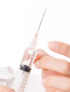
Теперь постучите пальцем по шприцу, чтобы собрать все пузырьки воздуха в верхней части шприца в один, и понемногу нажимая на поршень "вытолкните" воздушный пузырек через иглу.
Чтобы убедиться, что воздуха в шприце больше нет, дождитесь появления первой капли лекарства из иглы.
Протрите место укола спиртом.
На этом подготовительный этап окончен. Приступаем собственно к выполнению инъекции.
Главное - не бойтесь!Самое трудное в выполнении инъеции себе самостоятельно - преодолеть страх прокола кожи. Поверьте, это не так больно, как кажется.
Выполнение инъекции
1. Примите положение, которое вы определили для себя как самое удобное - стоя перед зеркалом или лежа на боку.
2. Возьмите шприц в правую руку. Держа шприц как ручку (копье?), решительным движением введите иглу на 3/4 ее длины в мышцу.
3. Придержав шприц левой рукой, переложите шприц в правой руке так, чтобы вам было удобно большим пальцем правой руки приводить в движение поршень.
4. Медленно надавливая на поршень шприца введите лекарство. Чем медленнее вы будете вводить лекарство, тем меньше вероятность шишки. (Внимание! если вы используете шприц устаревшей конструкции - двухкомпонентный - одной рукой, возможно, вам не удастся выполнить инъекцию. Cамому себе делать укол не слишком удобно - поэтому чтобы не мучаться лучше приобрести современный трехкомпонентный шприц).
5. Когда лекарство будет введено, левой рукой возьмите заранее подготовленную ватку, смоченую в спирте, прижмите место укола. Правой рукой в это время резким движением достаньте иглу. Помассируйте место укола.
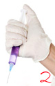
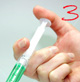
FAQ
.........................................
Нужно ли протирать место инъекции спиртом? Зачем?
Дезинфекция кожи этиловым или метиловым спиртом необходима только в больничных условиях. Нет необходимости дезинфицировать кожу в домашних условиях, конечно, если место введения чистое. Частое использование спирта может привести к утолщению кожи. Однако, если Вы все-таки хотите перестраховаться, место укола (до и после проведения инъекции) можно протереть чистым ватным тампоном, смоченным в спирте.
.........................................
Почему после инъекции выступает кровь? Опасно ли это?
Если после того, как Вы сделали укол, выступила кровь – это говорит о том, что Вы задели кровеносный сосуд. Это не опасно. Прижмите место укола ваткой со спиртом и подержите минут пять. Если кровь вытечет не наружу, а под кожу, образуется синяк. Сразу приложите лед, а на второй день - грелку, чтобы синяк быстрее рассосался.
.........................................
Нужно ли после набора препарата из ампулы, сменить иглу на шприце перед уколом? Зачем?
Если лекарство предварительно находилось в ампуле с резиновой крышкой, которую нужно проколоть, чтобы набрать лекарство – после набора лекарства, иглу лучше поменять. Так как игла, проткнув резинку в крышке ампулы, затупляется - а, очевидно, чем острее игла, тем менее болезненный укол. Также есть определенные виды лекарств (инсулин например), при использовании которых в инструкции есть пометка: «сменить иглу», в таких случаях иглу сменить нужно обязательно. Или, к примеру, Вы набрали лекарство и дотронулись до иглы, в таком случае ее тоже нужно поменять, чтобы избежать осложнений, связанных с попаданием инфекции.
.........................................
Не попадет ли игла в кость при внутримышечной инъекции?
Вероятность попадания в кость очень мала. В первую очередь нужно правильно выбрать место укола. Лучшее место для внутримышечной инъекцпии - верхняя наружная часть ягодицы. Там мала вероятность попасть иглой в кровеносный сосуд, нерв или кость. О внутримышечных инъекциях подробнее
.........................................
Почему внутримышечная инъекция делается именно туда, куда делается (внешняя верхняя четверть)?
Чтобы избежать осложнений. В этом месте мала вероятность попасть иглой в кровеносный сосуд, нерв или кость. Главное, когда Вы делаете укол в ягодицу, постараться, что игла попала именно в мышцу, а не осталась в жировой прослойке – иначе лекарство будет потрачено впустую и, кроме того, в месте укола может образоваться шишка, которая будет долго рассасываться. Обычно достаточно ввести иглу на глубину 2 – 3 см, что можно сделать иглой 0,6х30 или 0,7х30. которыми комплектуются шприцы для внутримышечных инъекций. Если же конституция Вашего пациента вызывает сомнение в возможности эффективного проведения инъекции стандартными иглами – возьмите иглу 0,8х40.
.........................................
Нужно ли массировать место укола после проведения инъекции?
Массаж места прокола после инъекции улучшает кровообращение и помогает распределению лекарства в тканях. Кроме того, протирание места укола ватным тампоном, смоченным в спирте - хорошее средство дезинфекции.
.........................................
Можно ли колоть той же иглой, если случайно выдернул шприц до окончания введения препарата?
Чтобы такого не произошло, нужно придерживаться правил выполнения инъекции. Если же по каким то причинам Вы выдернули шприц раньше положенного, не пугайтесь, успокойтесь и попробуйте сделать укол еще раз. Иглу можно не менять в том случае, если вы делаете укол одному и тому же человеку - при условии, если при выдергивании шприца из ягодицы игла случайно не соприкоснулась с посторонними предметами.
.........................................
Почему внутримышечную инъекцию надо делать так глубоко (около 3 см)?
Внутримышечный укол нужно делать так глубоко (около 3 см для взрослого пациента, и около 2 см - ребенку) для того, чтобы лекарство попало по назначению - в мышечную ткань, а не, скажем, в жировой слой. Если вколоть неглубоко и лекарство не попадет в мышцу - лекарство будет потрачено впустую, кроме того, в месте укола может образоваться шишка, которая будет долго рассасываться. У каждого вида инъекций есть своя методика введения лекарства и игнорировать данный факт не стоит для достижения максимального результата. Колите на 3/4 длины иглы и все будет хорошо!

(с) Мед. справочник., Регент.

(с) Библиотека о настоящих Вампирах
realvampires.do.am
[Наверх]